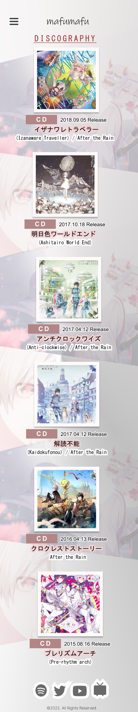
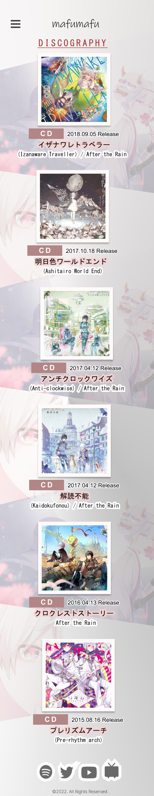

Background.
From my internship, we have been tasked to create a portfolio for a music artist that we listen to. I chose Mafumafu, a Japanese singer, vocalist, and lyricist. This website design is inspired by how mysterious, transcendal, or other wordly his songs seem to be or means. It also reflects the mysterious vibe he gives.
Objective.
Redesign Mafumafu's portfolio or website while still maintaining the current web pages from his old website and update the content of website for his current or most popular song.


 
